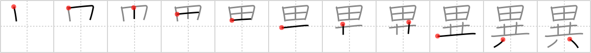

異
← →
uncommon

Reading:
On-Yomi: イ — Kun-Yomi: こと、こと.なる、け
Heisig story:
Brains . . . together.
Koohii stories:
1) [bihzad] 8-5-2008(156): Noah's Ark is so uncommonly large, he can even fit a rice field on top to feed the animals.
2) [TalkTalk] 13-8-2009(102): _potentially offensive (sorry): It's uncommon to find someone with brains who also believes in the story of Noah's Ark.
3) [CharleyGarrett] 29-8-2006(79): Brains together with beauty is an uncommon combination.
4) [ikmys] 18-2-2007(72): It's uncommon to find a pair of together twins who are connected at the brain! When such a set does turn up, they are inevitably showcased on TV.
5) [mantixen] 30-9-2008(21): Finding brains in a chicken caesar salad is uncommon, unless you eat at McDonald's.